A front porch sets the tone before anyone even reaches your door, and when the square footage is tight, every design choice carries more weight. The good news is that size was never really the obstacle. A tiny porch styled with intention beats a sprawling one styled without it, every time.
You don't need a wraparound farmhouse porch to pull this off. You need scale, one real focal point, and a few deliberate moves that make the space feel welcoming instead of cramped.
Below are twelve ways to get there, starting with the small finishing touches and building up to the bigger structural moves that reshape how the whole entry reads from the street.


Three Rules That Actually Make Small Porches Work
Scale everything down on purpose. A full-size patio sofa overwhelms a small entry instantly, slim-profile chairs, narrow benches, and wall-mounted lighting leave the movement space a porch actually needs.
Add exactly one statement element, a bold door color, an oversized planter, a patterned rug, and let it anchor the whole space rather than competing with five smaller ones. Then layer texture instead of adding bulk: woven baskets, natural fiber rugs, and wood accents build richness without taking up a single extra inch of floor.
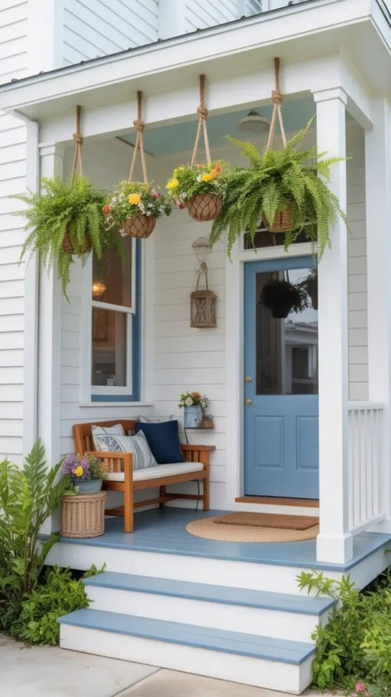
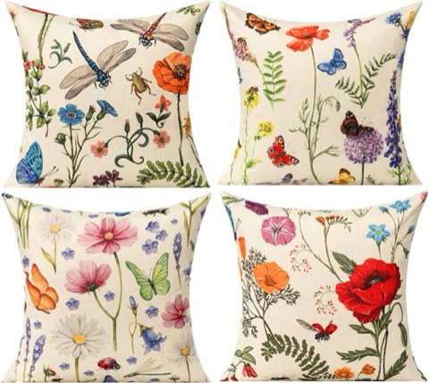
All Smiles Outdoor Patio Throw Pillow Covers, 18 x 18 Inch, Set of 4, Garden Flowers
Shop on AmazonWhy Small Porches Need More Intention, Not Less
A small porch doesn't leave room to hide behind oversized furniture or scattered decor, every single piece shows, which sounds risky but actually works in your favor. The most common failure mode is overcrowding: two chairs, a bench, three plants, and a basket crammed into a space built for half of that, until nobody can open the door all the way.
The second most common failure is the opposite problem, a porch with no focal point at all, nothing for the eye to land on. And the third is ignoring vertical space entirely. Walls, ceilings, and door frames are real design opportunities that flat, floor-only decorating leaves on the table.
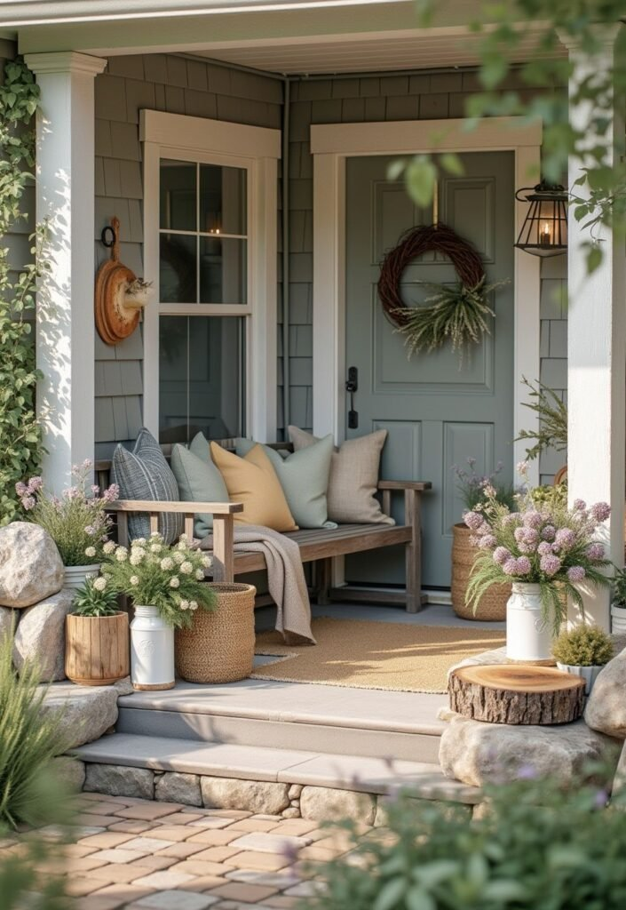
28 Inch Large Artificial Boxwood Wreath for Front Door with Sash
Shop on Amazon12 Small Porch Ideas Worth Trying
1. Layer in Seasonal Decor, Sparingly
Seasonal decor is where small porches most often go wrong, not because people decorate for the season, but because items multiply every year until the porch is buried under a collection instead of a layout.
Pick one seasonal anchor piece and let it lead: a statement wreath, a single oversized pumpkin, or one tall holiday lantern.
And actually remove last season's pieces before adding new ones. Rotating beats stacking every time, a welcoming porch isn't the same thing as an overwhelming one.
A good test is to walk up to your own front door as if you were a guest seeing it for the first time, and notice whether anything feels like leftover clutter rather than a deliberate choice.
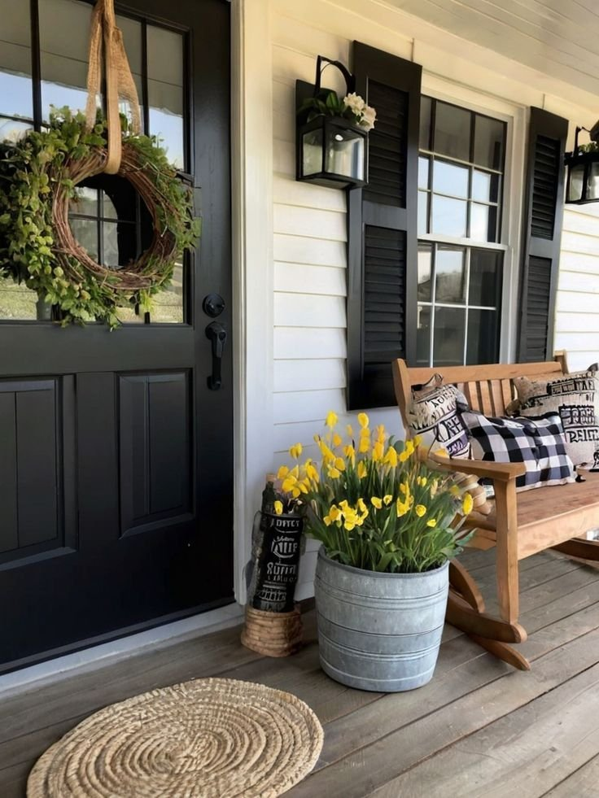
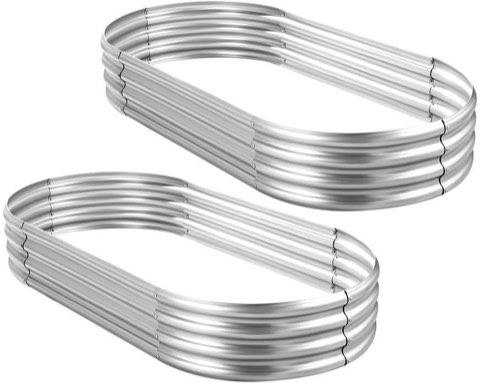
Land Guard Galvanized Oval Raised Garden Bed Kit, 2 Pcs, Large Metal Planter
Shop on Amazon2. Upgrade House Numbers and Hardware
The details most people skip, house numbers, door hardware, mailbox finish, actually move the needle on curb appeal more than people expect.
Bold, modern numbers in matte black or brushed brass read as polished immediately, especially mounted on a wood backing instead of straight against siding.
Keep every metal finish consistent across the porch, hardware, light fixtures, house numbers, mailbox. That one small consistency is what makes a porch feel designed instead of assembled piece by piece.
It's a weekend project at most, and one of the few upgrades on this list that a renter can usually swap back out just as easily when they move.
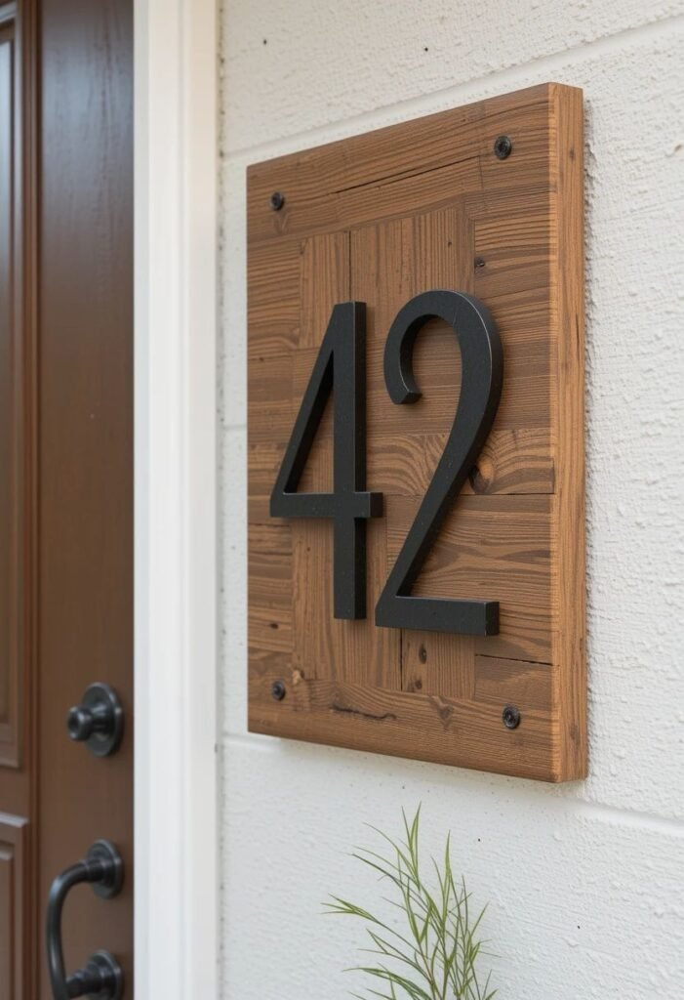
3. Add Storage That Still Looks Styled
Shoes, packages, umbrellas, they all pile up by the front door whether you plan for them or not. The goal on a small porch is storage that looks intentional rather than like a catch-all.
A slim bench with hidden storage, a row of woven baskets under a wall shelf, or a few hooks for bags and towels all handle the clutter without adding visual noise.
Keep it edited. The second storage starts looking like more storage than decor, it's defeated its own purpose.
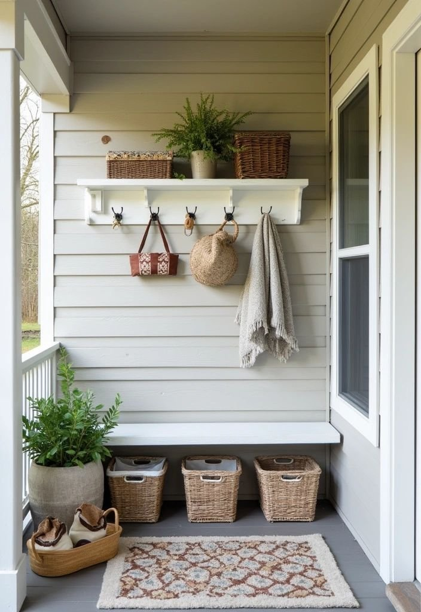

4. Bring in Natural Materials
A porch built entirely out of metal and hard surfaces can feel cold no matter how well it's arranged. Natural materials soften that instantly, think wood accents, woven baskets, rattan furniture, and linen cushions.
The swap doesn't need to be dramatic. Trading metal chairs for simple wooden ones, or adding a weathered wood bench, changes the entire feel of the space without changing the layout at all.
Texture genuinely does emotional work in a space most people underestimate, it's the difference between a porch that looks staged and one that feels lived-in.
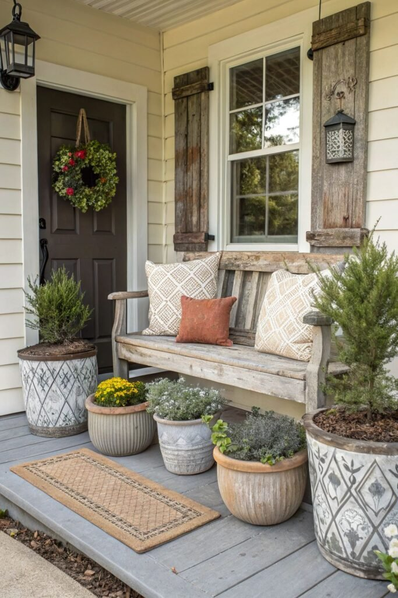
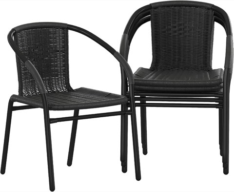
Flash Furniture Lila Modern Rattan Indoor Outdoor Stackable Bistro Chairs
Shop on Amazon5. Lean Into Symmetry
Symmetry does something small porches genuinely need: it creates order, and order reads as calm, and calm makes a tight space feel bigger than its actual square footage.
The easiest version is the two-and-two rule, two matching planters, two matching chairs, two matching sconces, positioned evenly on either side of the door.
Keep the center walkway completely clear. The moment clutter creeps into that middle space, the symmetry stops working and the porch goes back to feeling accidental.
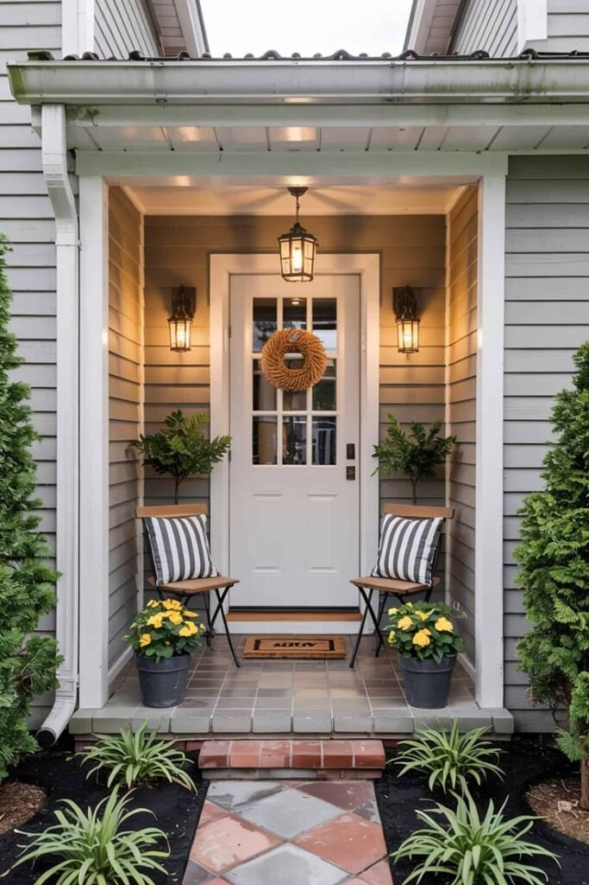
6. Hang a Statement Pendant
Once the basics are handled, a hanging pendant is where a small porch gets genuinely dramatic. Vertical elements pull the eye upward, which is exactly the trick that makes a tight space feel taller than it is.
A modern lantern pendant, a rustic farmhouse fixture, or a sleek black metal shade all do the job, glowing warm against a dark exterior and instantly reading as custom rather than builder-basic.
Scale is the only thing to watch. Measure your porch width before you shop; a pendant that's too small looks timid, and one that's too large overwhelms the space it's meant to anchor.
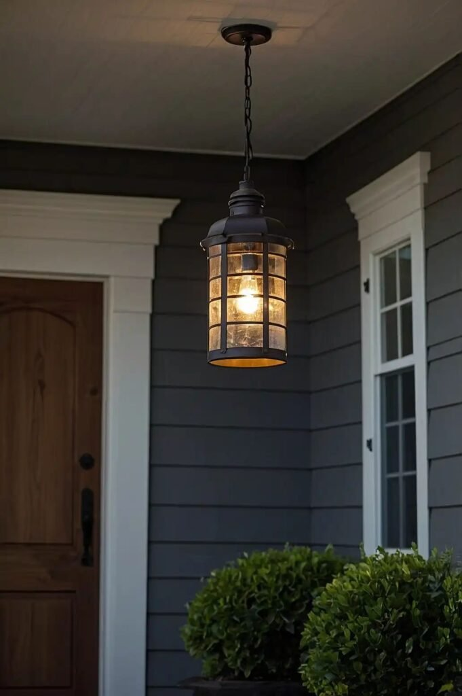
7. Upgrade the Lighting
Lighting changes the entire mood of a small porch more than almost any other single change. A dim builder-grade fixture makes even a well-decorated porch feel like an afterthought, while warm, layered light makes it feel genuinely inviting after dark.
Start by swapping out the original fixture for something with real character, matte black lanterns, brushed brass, or a simple industrial sconce flanking the door instantly upgrades the whole entrance.
Then layer in soft accent lighting on top, string lights along the porch ceiling do more to make a small space feel cozy at night than almost any decor item could.
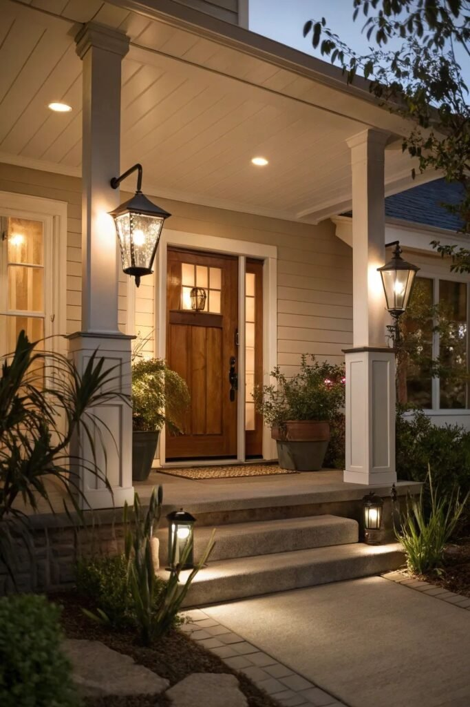
BesLowe Modern Black Outdoor Hanging Pendant Lantern Light for Porch
Shop on AmazonFarmhouse Outdoor Hanging Pendant Lantern Light Fixture
Shop on Amazon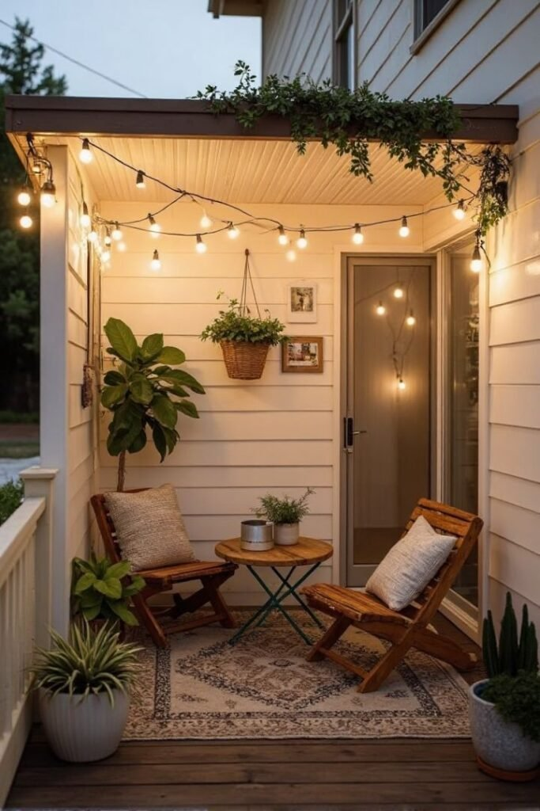
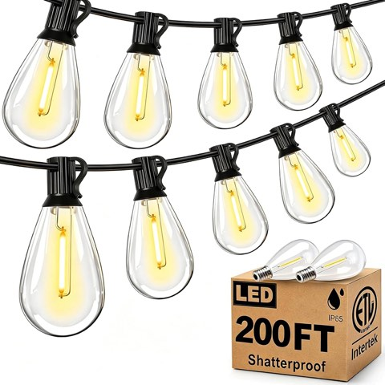
Tenmiro 200 FT Outdoor String Lights, Ultra Long LED Patio Lights, Shatterproof
Shop on Amazon8. Define the Space With a Rug
An outdoor rug is one of the easiest upgrades on this entire list, and it works almost instantly. It visually separates the porch from the rest of the exterior and gives the whole setup a sense of being an actual room.
Size matters more than people expect, a rug should sit fully under your seating with a visible border of floor around it. Too small looks like an accident; too large looks cramped.
Pattern earns its keep here too. A striped or geometric rug, layered over a plain jute one, hides dirt, adds personality, and can make a narrow porch read as noticeably wider.
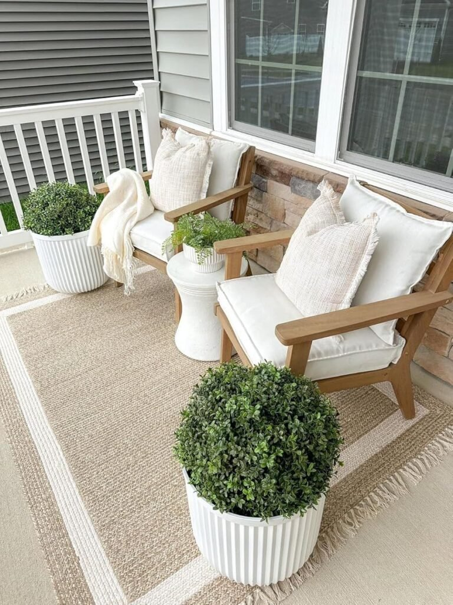
35.5 Inch Weatherproof Backless Carbonized Outdoor Garden Wood Bench
Shop on AmazonFlash Furniture Lila Modern Rattan Indoor Outdoor Stackable Bistro Chairs
Shop on Amazon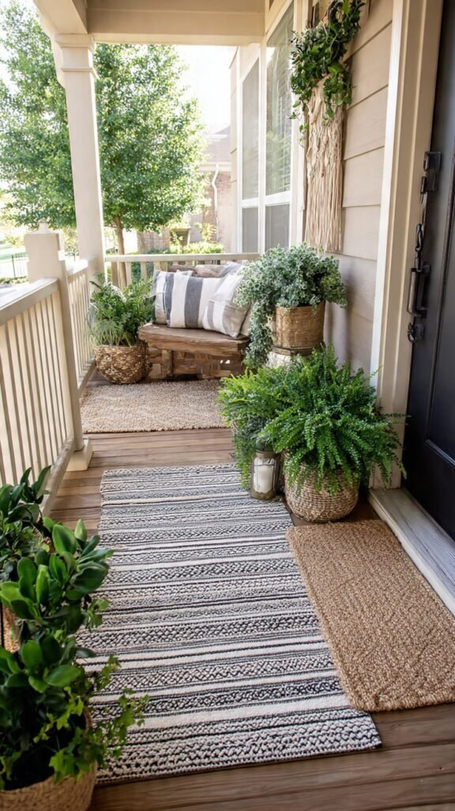

9. Go Vertical With Plants
Plants are non-negotiable for a welcoming porch, but on a tight footprint they eat up floor space fast if you only think horizontally. The fix is to layer upward instead, wall-mounted planters, hanging baskets, and a tiered plant ladder all add greenery without claiming square footage.
A tiered ladder shelf tucked beside the door lets you stack several pots in the same footprint one planter would normally take.
Hanging baskets add a second, higher layer again, ferns and trailing blooms suspended from the porch roof fill the space overhead that most small porches leave completely empty.
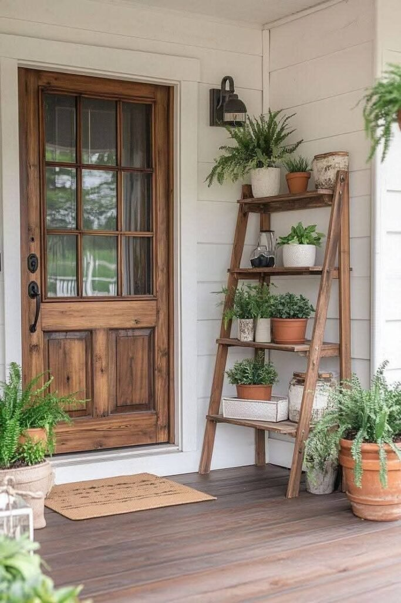
5 Inch Stainless Steel Floating House Numbers, Modern Metal, Number 6
Shop on AmazonHY-KO AK-300 Wood House Number Plaque, 6 x 17 Inch, Brown
Shop on Amazon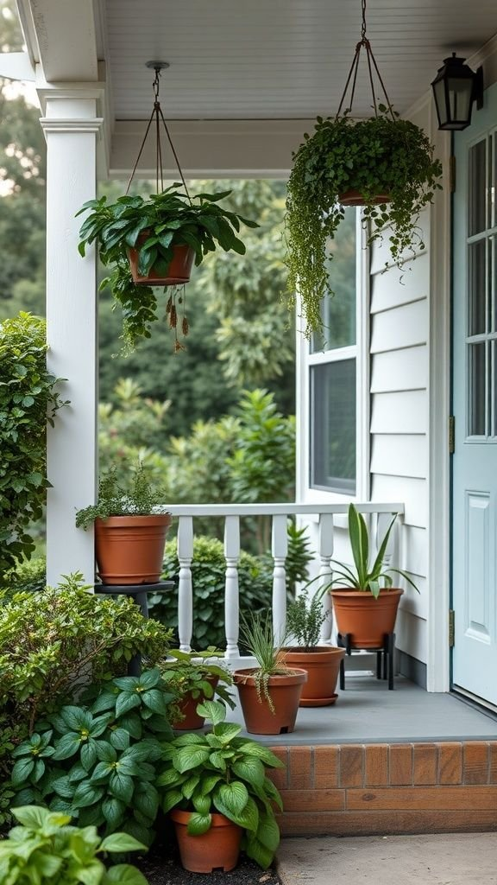
10. Create a Cozy Seating Moment
A small porch doesn't rule out seating, it just rules out oversized seating. A slim bistro set, a pair of armless chairs, or a narrow bench against the wall keeps the center of the porch clear while still giving you somewhere to actually sit.
The test is simple: can someone knock on the door and step back comfortably without bumping a chair? If yes, your scale is right.
Dress it up with a couple of weathered pillows and a throw draped over the arm, and the whole setup reads as a real sitting spot instead of an afterthought.
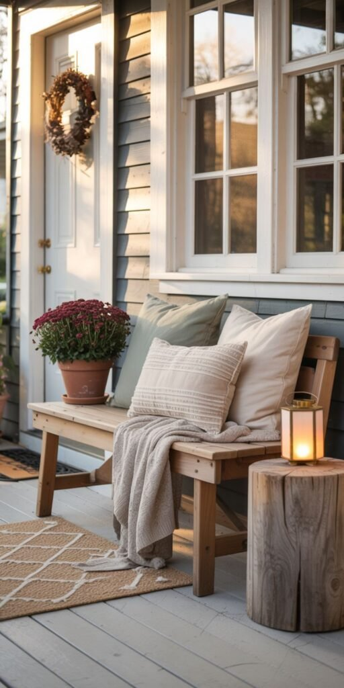
11. Paint the Front Door
If your porch feels flat, there's a good chance your door is blending into the siding instead of standing out. A bold door color is the fastest, cheapest way to give a small entry a genuine focal point.
Deep navy, forest green, charcoal, warm terracotta, any of these reads as intentional rather than loud, especially against a neutral exterior.
Here's the honest math: a can of paint versus five separate decor purchases trying to achieve the same effect. The door wins every time, and a soft teal-blue next to warm wood crates and a few plants proves the point on its own.
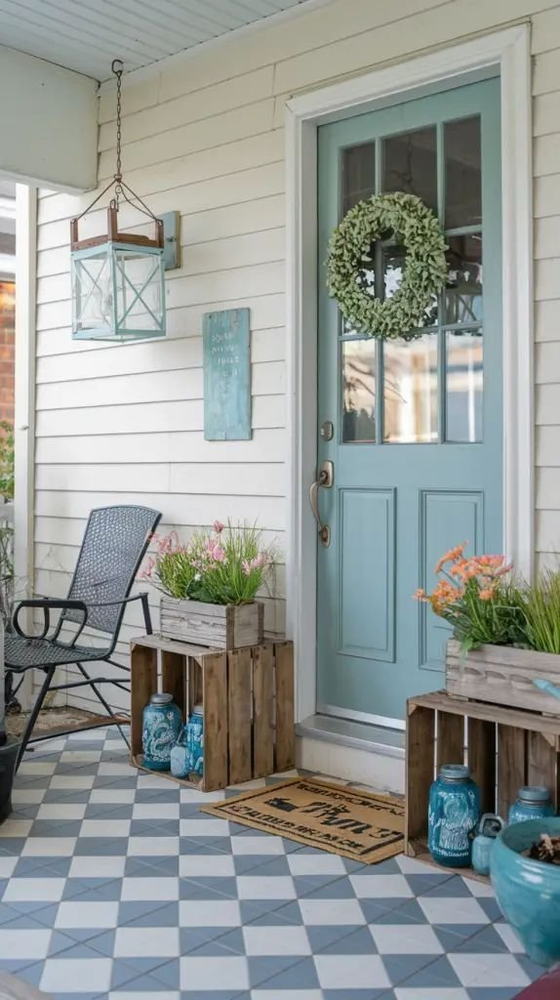

12. Frame the Entry With Greenery
This is the single highest-impact move on this list, and it costs almost nothing beyond two matching planters. Flanking your doorway with identical greenery creates a visual frame that makes the whole entrance feel larger and more considered.
Go vertical here, boxwoods, slim topiaries, snake plants, or tall ornamental grasses all work, and tall shapes draw the eye upward instead of letting it stop at ground level.
The one rule: keep everything trimmed. An overgrown planter does the opposite of what you want on a small porch, it shrinks the space instead of framing it.
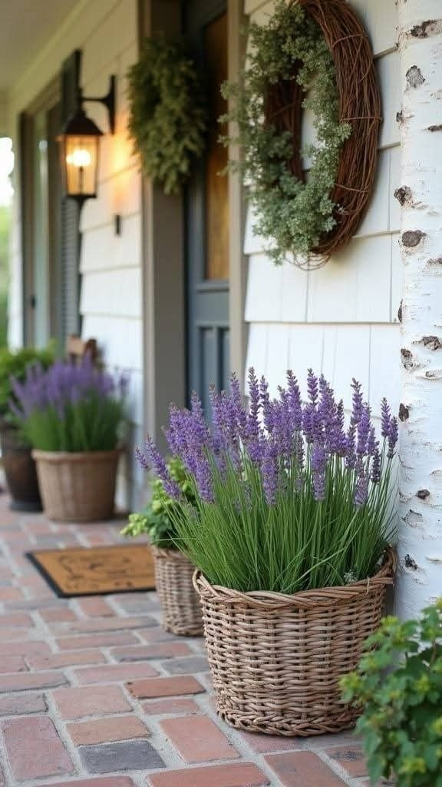
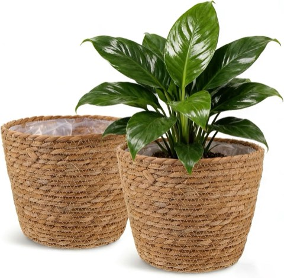
Seagrass Plant Baskets with Liner, 2 Pcs, Wicker Planters for 6 Inch Pots
Shop on Amazon27.5 Inch Artificial Boxwood Topiary Ball Trees, Set of 2, UV Resistant
Shop on AmazonFinal Thoughts
None of this requires more square footage, it requires better decisions about the footage you already have. A bold door color, one real focal point, lighting that actually sets a mood, and a little restraint on the seasonal decor will do more for a tiny porch than doubling its size ever would.
Start with whichever idea feels most overdue on your own porch, and edit ruthlessly as you go. If you add something new, let something old go. A small porch rewards restraint in a way almost no other part of a house does.
Give it a season to settle before judging the result. The lighting, the greenery, and the seasonal layer all look slightly different depending on the time of year, and a porch that feels right in October might need one small tweak by spring.